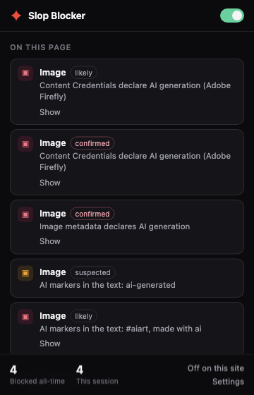

How detection works
It reads what the platforms already publish.
Pixel-level “AI detectors” are unreliable and heavy. So instead of guessing, this aggregates signals that already exist — and the platforms did the hard part years ago. TikTok reads C2PA Content Credentials on upload and labels AI content whether or not the creator disclosed it. Meta does the same for files exported by Firefly, Photoshop generative fill, DALL·E and Canva. YouTube requires creators to disclose realistic synthetic media, and applies the label itself when they don't.
| Signal | Confidence | Where it comes from |
|---|---|---|
| Platform disclosure | confirmed | YouTube's “altered or synthetic content” label, TikTok's AI badge, Meta's “AI info” tag |
| C2PA Content Credentials | confirmed | A manifest citing trainedAlgorithmicMedia |
| IPTC / XMP metadata | confirmed | DigitalSourceType = trainedAlgorithmicMedia |
| You blocked the author | confirmed | Your own list, built one button press at a time |
| A known AI tool signed the file | likely | A claim generator like Firefly or Midjourney, with no explicit AI action |
| Text markers | likely / suspected | Self-tagging hashtags and disclosure phrases next to the media |
Confirmed and likely are blocked
Suspected only gets a small “possibly AI” chip. It is a guess, and blocking guesses is how a blocker loses your trust.
Signals don't stack
Two suspected signals stay suspected. Two weak guesses are still a guess, so confidence is the highest any single signal justifies — never a sum.
It fails open
Every signal provider is wrapped. A thrown error is logged and skipped: a broken adapter must never break the page you are reading.
The hard part
A video complaining about AI slop contains the same words as a disclosure.
This is where blockers in this category collect their one-star reviews — blocking a video for saying “AI” in its captions. Two rules keep it from happening here, and both have tests that fail if you break them.
Disclosures are only read where disclosures live
Platform label text is matched only inside the disclosure containers a site adapter names explicitly — never in titles, captions, descriptions or article text.
Keyword tiers are asymmetric
“Generated with AI” and #aiart only get said when someone is labelling
their own work, so one hit blocks. Bare “AI-generated” is just as likely to be the
topic, so a single hit stays at suspected.
Nothing is one-way
Every block is one click from revealed, permanently. You can trust an author, switch it off for a site, or turn the whole thing off from the toolbar.
The popup
Every block says what fired, and how sure it is.
No silent hiding. Each row names the signal in plain words — “Content Credentials declare AI generation (Adobe Firefly)”, “AI markers in the text: #aiart” — with the tier it earned, and a Show that undoes it permanently.
On a YouTube channel, a Short, a TikTok, an Instagram post or an X profile it also offers Block @thatchannel and Block this video. Those read the page rather than the detections, so they work on a channel there is no signal about — which is the point. Both are toggles.

Privacy
No server, no account, no telemetry — and you can check.
Every extension in this category says it runs locally. In a minified bundle downloaded from a store, all of those claims are worth the same: nothing. So this one is built reproducibly, and each release publishes the hash of its package.
# build the package yourself and compare it to the release
git clone https://github.com/ddtch/slop-blocker
cd slop-blocker
npm ci && npm run pack # prints the SHA-256 of the zipOne kind of network request
It reads media the page already loaded, to look at that file's metadata — first
256 KB, credentials: "omit", only the host already serving you the
image. There is no other destination.
Nothing leaves the machine
Settings, lists and counters live in extension storage. Counters are plain numbers — no URLs, no titles, no timestamps. Nothing syncs.
No community list of names
The bundled creator list ships empty, on purpose. Calling a named account an AI-slop channel is a factual claim about a real person. You build that list yourself.
Before you install it
What it does not do.
A blocker that oversells itself is worse than no blocker, because you stop checking. So, plainly:
Honest limitations
- Undisclosed AI content is out of reach. If nobody labelled it and the file carries no metadata, this will not find it. No extension reliably can.
- Selectors are barely verified against live pages. Most were written from public documentation. One disclosure string — TikTok's “Contains AI-generated media” — has been confirmed on a real page. The rest have not.
- Feed thumbnails aren't covered yet. A blocked video is hidden on its own page, not where its card appears in a feed.
- C2PA signatures are not verified. This detects a file's declaration that it was AI-generated; it does not prove the declaration is genuine. Good enough to hide something, not a trust anchor.
- No accuracy percentage. You will not find “94.8% accurate” anywhere here. The confidence tiers are the claim, and you can read the code that assigns them.
Install
Load it from source.
It is not in the Chrome Web Store yet — the selectors need verifying against live pages first, and shipping detection that has never been confirmed to work would be exactly the thing this project criticises. Until then:
git clone https://github.com/ddtch/slop-blocker
cd slop-blocker
npm install
npm run build # -> dist/
Then open chrome://extensions, turn on Developer mode, choose
Load unpacked and pick the dist/ folder. Chrome 120+.
MIT licensed
Read it, fork it, ship it. 163 tests, and CI runs them on every push.
English, Español, Русский
Interface and platform disclosure strings. Adding a language is one file and no code.
Found a false positive?
That is the most useful thing you can report. Open an issue — the popup tells you the reason line to paste in.